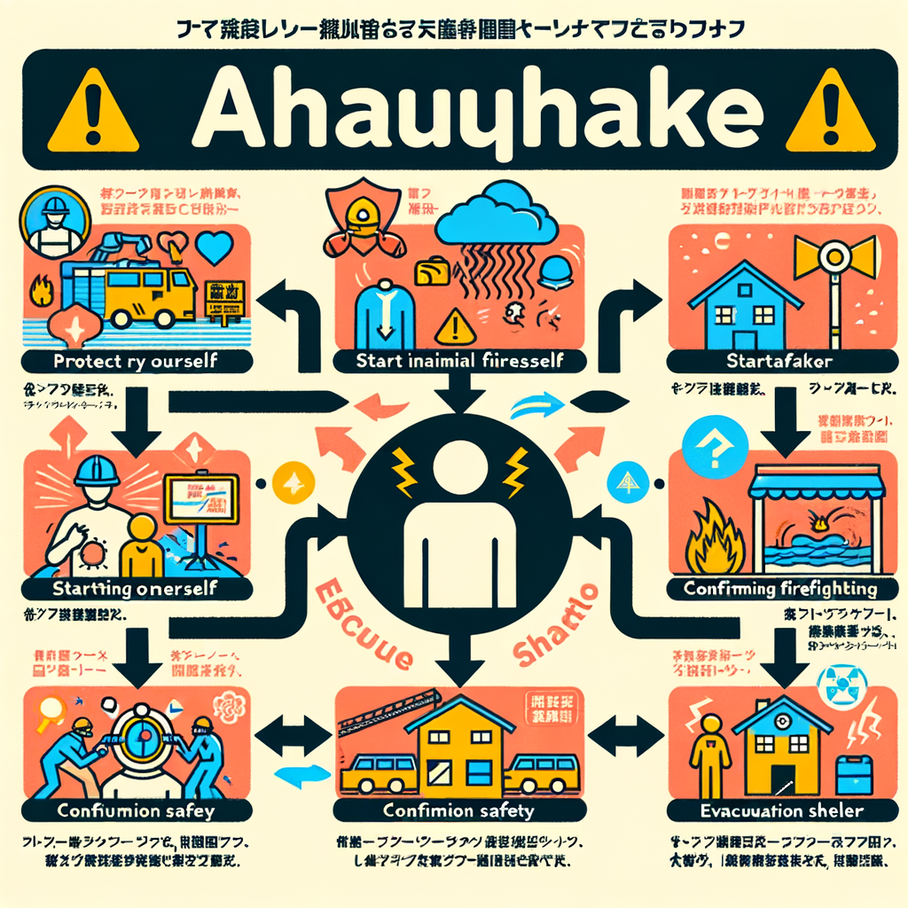

ACTION PLAN
災害時の行動マニュアル
地震発生直後から避難所運営まで。旭丘一丁目町会がまとめた時間軸別アクションと、 安否確認班・医療・情報伝達の体制を紹介します。
発災から72時間の行動フローチャート
総務省消防庁が推奨する流れに基づき、旭丘一丁目町会向けに細分化しました。余震に注意しながら、安全第一で進めましょう。
0〜10分
身の安全確保と初期消火
- ・揺れを感じたらテーブルの下などに身を隠し、頭部を保護。
- ・揺れが収まったら火元を確認し、可能ならすぐ消火。火が大きい場合は安全確保を優先。
- ・家族の安否を確認し、ケガ人がいれば応急手当を実施。
- ・ブレーカー・ガス元栓を閉め、靴を履いて足元を保護。
10〜30分
近隣との安否確認・救出
- ・家族や隣近所と声を掛け合い、要支援者や独居高齢者の状況を確認。
- ・倒壊家屋や閉じ込めがあれば、複数人でバール等を利用し救助（無理はしない）。
- ・屋外へ避難する際はブロック塀やガラスに注意し、広い道路側を歩く。
- ・避難判断を家族で共有し、非常持出袋を携えて徒歩避難の準備。
30〜120分
指定避難所へ移動・情報集約
- ・徒歩で旭丘小学校または旭丘中学校へ。避難前に戸締りを確認。
- ・避難所到着後は受付で家族構成と健康状態を伝え、町会安否確認班へ状況を共有。
- ・ペットは指定エリアで管理。飼い主責任で用品を持参。
- ・避難所で配布される情報掲示板や防災無線から最新情報を入手。
2〜72時間
避難所運営・情報伝達・共助活動
- ・避難所運営に協力し、物資配布や清掃など役割分担を行う。
- ・町会災害対策本部と連絡を取り、安否情報を集約。ねりま情報メール・防災ラジオで行政情報を確認。
- ・給水ステーションや炊き出しについて、町会からの連絡に従う。
- ・広域避難が必要な場合は、江古田の森公園や武蔵大学方面へ移動し消防等の指示を受ける。
町会の連絡体制
旭丘一丁目町会は冗長化された連絡網で情報を共有します。電話連絡網→メール・SNS→トランシーバー→徒歩伝達の順に切り替え、確実に情報を届けます。
- 町会役員・班長の連絡先リストを毎年度更新。深夜でも連絡可能な体制を整備。
- 通信障害時には班長が徒歩で各戸を巡回し状況を報告。
- 役員から町会災害対策本部→区災害対策本部・消防署へ情報をエスカレーション。
安否確認班の役割
町内を複数ブロックに分け、班長と民生委員が各戸を訪問し「無事」「軽傷」「要救助」などを確認。安否旗（緑=無事／赤=要救助）を活用し、情報を本部へ迅速に報告します。
- ・要支援者には事前に担当者を決め、発災後は優先訪問
- ・トランシーバーまたは報告書で町会本部へ情報共有
- ・救助要請は消防団・消防署へ速やかに連絡
安否確認訓練では、安否旗掲出や報告手順をシミュレーションします。ご協力をお願いします。
医療・ライフライン情報
練馬総合病院（旭丘1-24-1）は災害拠点連携病院に指定。軽症者は旭丘中学校の医療救護所が一次対応します。薬が必要な場合は薬剤師会による臨時薬局や処方箋なし調剤を活用しましょう。
- 救護所ではトリアージ後、必要に応じて区内外の病院へ搬送。
- 薬局は最低限の処方薬を提供できる特例あり。お薬手帳を持参。
- 給水ステーション（学田公園ほか）では1日3L/人を供給。ポリタンクを持参。
広域避難時のポイント
- 火災の煙は風下を避け、千川通りなど延焼遮断帯を通って移動。
- 江古田の森公園・武蔵大学の集合場所で消防や行政の指示に従う。
- 園路・広場で集まり、救援情報を共有。広域避難後も町会本部への報告を忘れずに。
隣接敷地との柵・垣根を取り外す合意や代替脱出路の共有も、発災前に話し合っておくと安心です。